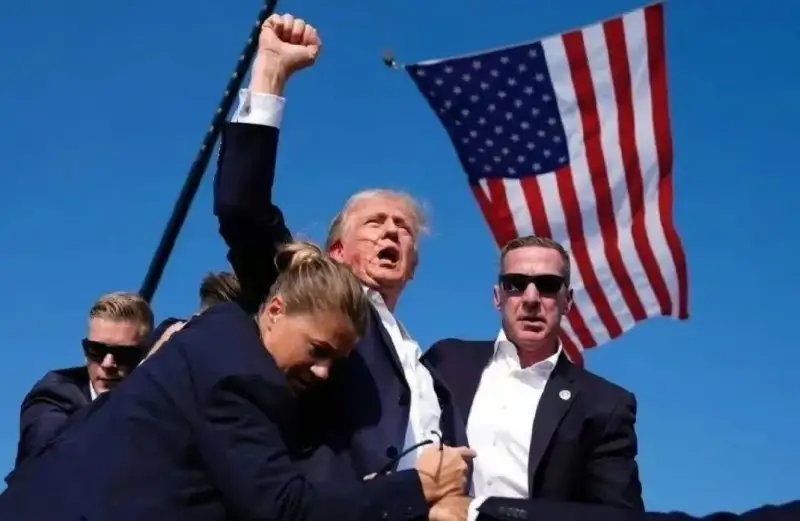
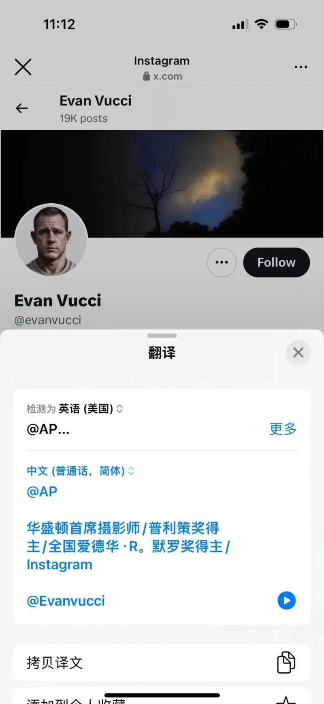
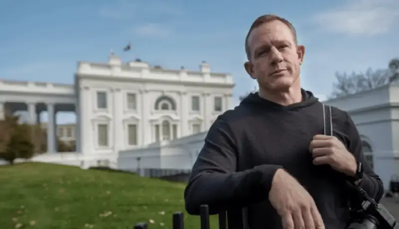
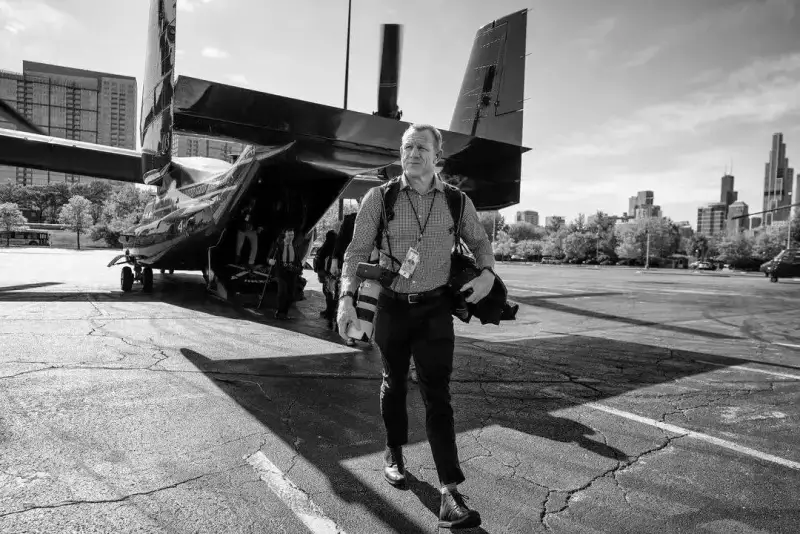

You can learn what happened in this photo from the news. For a photographer, the question that draws the most attention is how this photo was made:

Photo: AP, Evan Vucci
This is a great capture. The timing, the composition, and the angle are all skillful. It is a nearly perfect news photo.
As soon as the photo came out, people at home and abroad agreed that it would win an award.
The photographer is Evan Vucci. He works for the Associated Press and is based in Washington, D.C. His social media shows that he mostly photographs U.S. leaders.
At that moment, he did not think about hiding. He raised his camera and fired quickly. That takes very strong nerves and a high level of photography.
I read the profile on his social account. He has already won a Pulitzer Prize. He has also won a full range of news photography awards:

So this photo is not luck. It comes from years of buildup. His long accumulation of skill and experience let him stay calm in danger and capture such a fine image.

Photographer: Evan Vucci
The video below is the first-person view from Jabin Botsford, who stood to the right of Evan Vucci. It shows how a top photographer works.
We can see that, besides Trump himself, the biggest highlight of this photo is the American flag. After he captured the moment of the shooting, he needed to keep catching Trump's strongest expressions. He also needed to use the setting to catch a moment with more meaning.
In a breaking-news situation, framing is the most important thing. Use a wider frame. You can crop it later to the range you want.
The biggest success of this photo is the shooting angle and the timing. The angle gives Trump a tall, strong shape and places him with the American flag. The timing captures his state at that moment.
People also want to know what camera he uses. The photos he posted on social media suggest that he has used the Sony a9M2 since 2020:

From the scene, the cameras are mostly Sony, Canon, and other mirrorless brands. Mirrorless cameras give a full what-you-see-is-what-you-get view. They also give faster burst shooting and better focus.